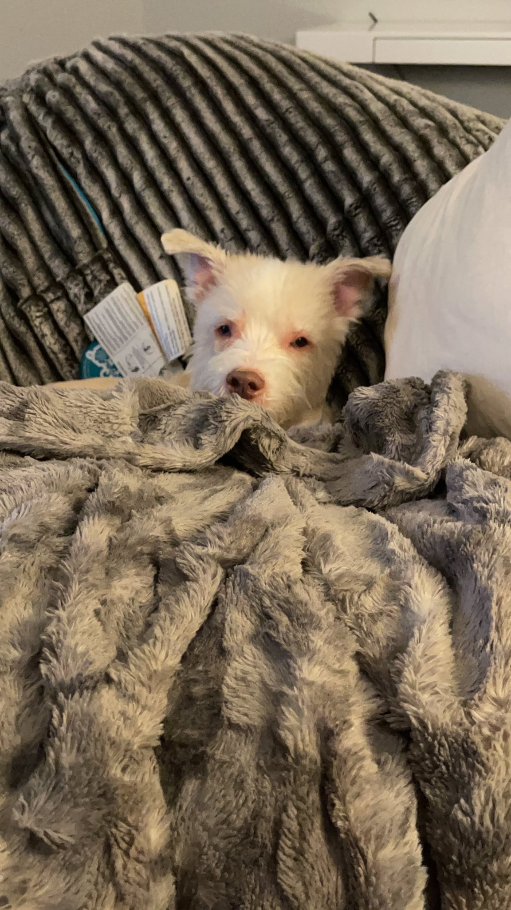

Hi, my name is Cooper! I am a pit mix, with a Bichon grandma. That means I'm mostly pit, but I have fur passed down from my grandma. Some say I look like the Luck Dragon from "Never Ending Story," Falcor.
Mostly, I like to sleep near mom and dad. Occasionally, I like to chase squirells as they run around the tree or along the fence. I also like to take trips with mom and dad when they go on vacation.
My mom is ToniAnn, whom I love more than anyone. She always takes care of me and babies me constantly. My dad is Shawn and he loves petting and snuggling me ALL the time!
